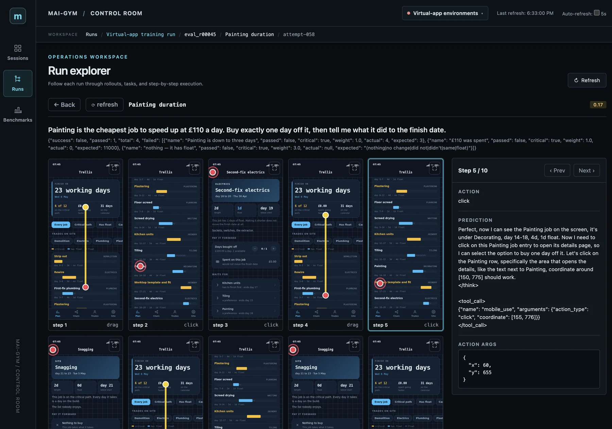
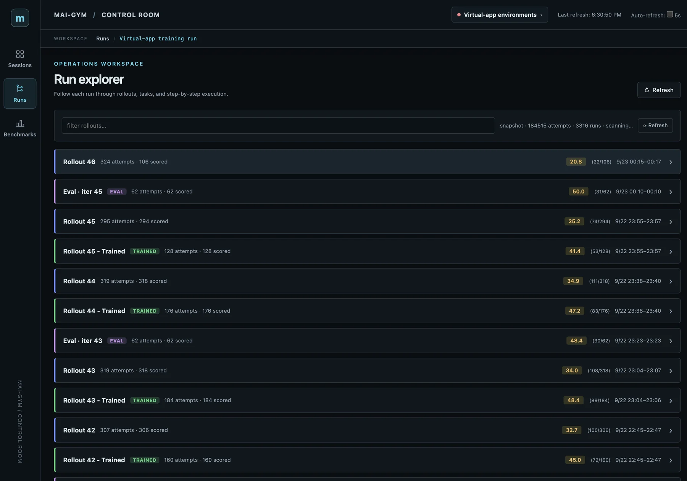
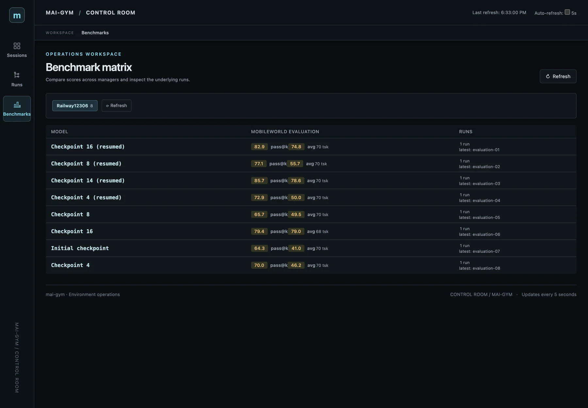

MAI-Gym Trajectory Dashboard
Visual Control Room tour plus setup for the embedded Rust/SQLite dashboard server, indexer, and HTTP diagnosis API.
The embedded Rust Control Room dashboard connects aggregate evaluation and online RL metrics directly to live fleet status and step-by-step trajectory artifacts. A separate indexer discovers and refreshes trajectories into a local SQLite index so metadata browsing never scans object storage on every request. The frontend and its plotting library are embedded directly in the server binary.
The dashboard is designed to answer three diagnostic questions (Paper §3.3 & Appendix A.1):
- Is the fleet healthy? Monitor instance capacity, usage history, throughput, and active session leases across managers.
- Which tasks explain a score? Navigate from benchmark matrices and runs down to evaluation rollouts, training batches, and individual attempts (including automatic environment-failure reruns).
- Where did an attempt go wrong? Replay episodes step by step, aligning each screenshot with drawn action coordinates, the model's reasoning trace, executed tool calls, and verifier outcomes so agent failures stand apart from infrastructure faults.
Control Room Visual Tour#
Click any screenshot to zoom in:




Build and run#
Use a Rust toolchain that supports edition 2024. From src/dashboard-rs/, build the two binaries and create a local copy of the configuration.
cargo build --release --locked
mkdir -p .state/trajectories
cp -i config.example.yaml .state/dashboard.yaml
umask 077
test -s .state/broker.token || python3 -c 'from pathlib import Path; from secrets import token_hex; Path(".state/broker.token").write_text(token_hex(32))'Edit .state/dashboard.yaml before starting the processes. Set the manager's url to its HTTP address and traj_root to the absolute directory where it recorded trajectories. For the first MobileWorld evaluation with an auto-started manager, this is the mobileworld/ directory next to the run's results.json. Find your evaluation output
In the first terminal, prepare the index and start the server.
./target/release/indexer --config .state/dashboard.yaml --db .state/index.sqlite prepare
./target/release/server --config .state/dashboard.yaml --db .state/index.sqlite \
--cache .state/cache.sqlite --broker-token-file .state/broker.tokenIn a second terminal, start the indexer from src/dashboard-rs/ with the same configuration and database.
./target/release/indexer --config .state/dashboard.yaml --db .state/index.sqlite run \
--broker http://127.0.0.1:6093 --broker-token-file .state/broker.tokenOpen the dashboard once the indexer is running at http://127.0.0.1:6092/. Select your run, task, and attempt to inspect screenshots, model outputs, actions, and verifier scores. A fresh index starts empty and fills as the indexer discovers trajectories.
HTTP Diagnosis API#
The dashboard server exposes read-only JSON endpoints that support both the web UI and automated agent-driven diagnosis by coding agents (such as Claude Code or Codex):
| Endpoint | Description |
|---|---|
GET /ready · GET /api/managers | Server readiness and configured manager list. |
GET /api/overview · GET /api/health · GET /api/sessions · GET /api/history | Fleet capacity, manager health, active leases, and utilization history. |
GET /api/benchmarks · GET /api/benchmarks/suite | Aggregate benchmark suite tables and per-suite run breakdowns. |
GET /api/traj/info · GET /api/traj/runs · GET /api/traj/rollouts | Trajectory root status, run list, and rollout/batch groups. |
GET /api/traj/tasks · GET /api/traj/list · GET /api/traj/results | Per-task summaries, attempt listings (including reruns), and score exports. |
GET /api/traj/detail · GET /api/traj/screenshot | Step-by-step trajectory details (model outputs, actions, verifier output) and step screenshots. |
Configuration#
The indexer and server share the SQLite database. The indexer takes a writer lock to prevent duplicate writers. Manager sampling, active attempts, discovery, and historical reconciliation advance independently with bounded storage concurrency.
config.example.yaml uses local files. To browse object storage, set a manager's traj_root to an oss://bucket/prefix URI and supply MAI_GYM_OSS_ENDPOINT, MAI_GYM_OSS_ACCESS_KEY_ID, and MAI_GYM_OSS_ACCESS_KEY_SECRET through the server's environment. Credentials and generated state belong outside version control.
The public listener and storage broker bind to loopback by default. The broker requires the generated token file and must remain loopback-only. Manager admin forwarding (POST /api/admin/{operation}) is disabled unless the server is started with --allow-admin. url_base supports a reverse-proxy prefix such as /dashboard/.
For an existing Python-dashboard database, the journal, import, and follow subcommands support a staged migration. Run indexer --help and the relevant subcommand's --help for arguments. In legacy mode, pass --legacy-db to run; initial import must finish before the Rust indexer can take ownership.
Validation#
cargo test --locked
cargo fmt --checkTests use temporary databases, in-memory storage, and local fixtures. The vendored plotting library's license is preserved in static/uplot-LICENSE.
License#
The dashboard code is licensed under MIT. The vendored uPlot library retains its own MIT license.